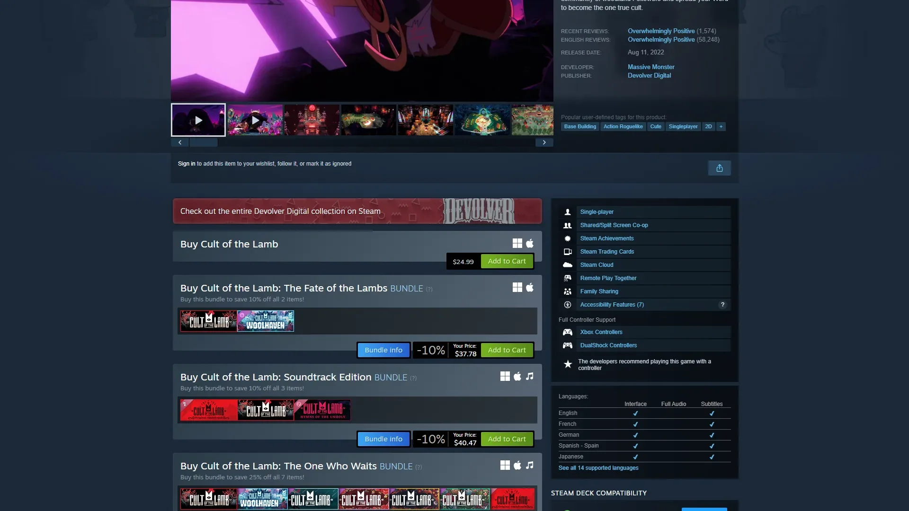
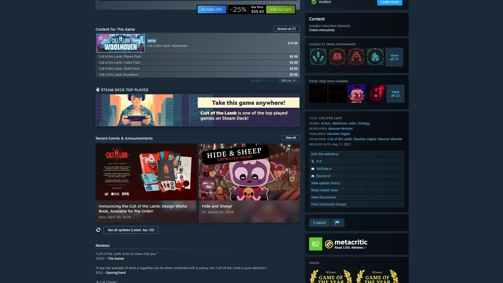
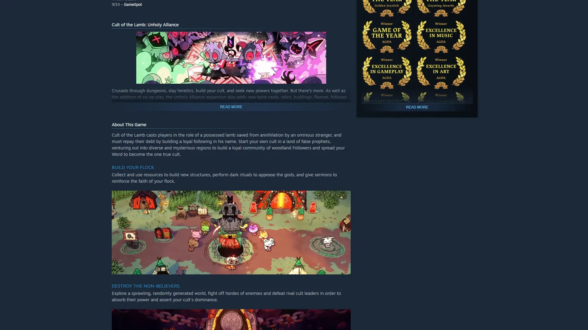
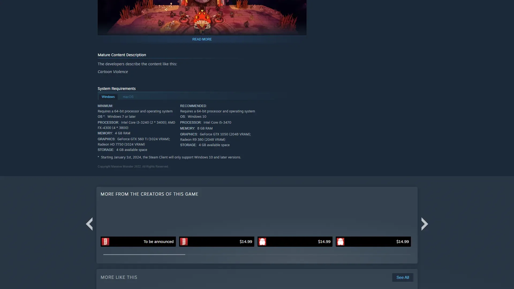
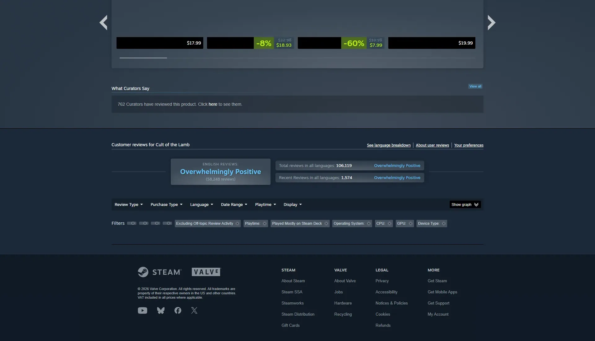

可爱暗黑风Roguelike+邪教经营模拟。






想象一群圆滚滚、大眼睛的小动物——猫、兔、鹿、狐——它们围成一圈，中间是一座石头祭坛。祭坛上躺着一只不太忠诚的小猪，戴红色皇冠的小羊教主举起了祭刀——所有教徒齐声欢呼。这不是恐怖游戏——这是 Massive Monster 用最可爱的画风包裹了最邪恶的内容。暗色战斗区域里有紫黑阴影和扭曲触手，明亮营地里有绿草蓝天和木屋炊烟——双模式的色调切换让你在温馨和恐怖之间反复横跳。
你是小羊——本该被献祭的最后一只羊羔，被神秘的等待者拯救。代价是建立一个以它为核心的邪教，招募信徒、推翻四位旧神。白天你给教徒做饭、布道、建房子——一个尽职尽责的好牧人。晚上你冲进暗色森林，用随机武器和诅咒法术屠杀旧神的爪牙。而那些不忠诚的教徒？你可以把它们送上祭坛、喂它们吃粪便、或者直接洗脑。
那个你第一次在教徒面前举行献祭的瞬间，可爱的小动物们围着祭坛欢呼——荒诞感让你笑出声又觉得不太对劲；那座从荒地一路建设成繁荣邪教村庄的营地，每多一栋建筑都有实实在在的成就感；那只戴着红色皇冠的小羊剪影，大头长耳的造型过目不忘——它是 2022 年独立游戏界最具辨识度的品牌符号。这不是一个关于善恶的故事，是一个关于「可爱和邪恶能不能共存」的故事——教徒已经在等你布道了，今天你打算献祭谁？
可爱邪典 × 暗黑经营，是 Massive Monster 把大头大眼的可爱动物卡通美术（扁平色彩、粗线条、夸张比例）和邪教/献祭/洛夫克拉夫特恐怖的暗黑内容反直觉地缝合在一起的反差美学。底色是手绘 2D 卡通——让一切邪恶行为看起来无害；变异在于暗色战斗区域和明亮营地的双模式色调切换创造了持续的视觉反差。色彩锁定皇冠红 + 森林暗紫 + 营地草绿三色组合。整体调性介于《动物森友会》的可爱经营和洛夫克拉夫特宇宙恐怖之间——用最甜的糖衣包最苦的药。
「可爱+暗黑」反差美学的演化跨越了三十多年。1990 年蒂姆·波顿的《剪刀手爱德华》定义了「哥特可爱」——用童话外壳包裹黑暗内核。1993 年蒂姆·波顿《圣诞夜惊魂》把可爱骷髅做成了文化符号。2001 年《动物森友会》奠定了「可爱生物+经营模拟」的品类视觉。2005 年《黏黏世界》（World of Goo）和2010 年《地狱边境》（Limbo）展示了独立游戏中「可爱外表+阴暗内核」的设计可能性。2014 年《Don't Starve》把手绘哥特+生存经营做成了品类标杆。2022 年《咩咩启示录》把这条线推到了商业巅峰——可爱动物进行邪教仪式的视觉反差自带病毒传播力，红色皇冠成为年度最具辨识度的游戏符号之一。
基于体验清单 · 审美偏好 · IP故事三维度综合选出